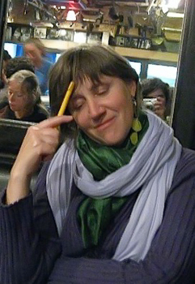
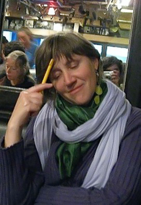

The State of Things
Hillary has Cancer. All doctors say it is difficult to treat and that it is lethal. Hillary is physically weak, but mentally sharp. The situation is hard, but she has the support of her immidiate family.
How to Help
Please send your love, thoughts and prayers. The fastest way to contact her is per WhatsApp. You could also send her a postcard to my home address:
Hillary Strohmeier c/o Paul Strohmeier
Lessingstr. 24
66121 Saarbrucken
Germany
How to Help Financially
As Hillary is still covered by Austrian insurance, we were able to minimize costs associated with medical treatment. However, events have -- naturally -- disrupted her financial plans. Hillary has no savings to speak of and a mortgage which she intended to pay off over the course of the next years. She will not be able to do this and is upset about the idea of leaving us, her children to deal with it. We also, honestly do not have a good idea of what additional financial issues will await us -- for example, I intend to organize a professional care-taker to help ensure her quality of life once she is back home with us. Any financial support is appreceated.
Ways to do this include sending money directly to Hillary via Zelle:
PayPal: hillary[dot]keel[at]gmail.com
Sending money to her Daughet Sophie via PayPal
PayPal: sophie[dot]strohmeier[at]gmail.com (please select "friends and family" to avoid fees)
Or (for people in Europe) a direct Bank Transfer to me -- Paul, her Son
Please request bank details via e-mail paul[dot]strohmeier[at]gmail.com